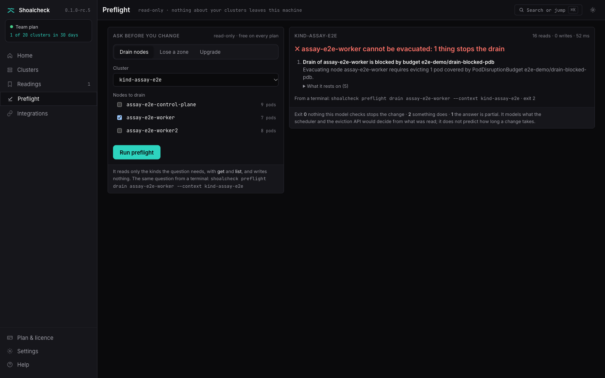
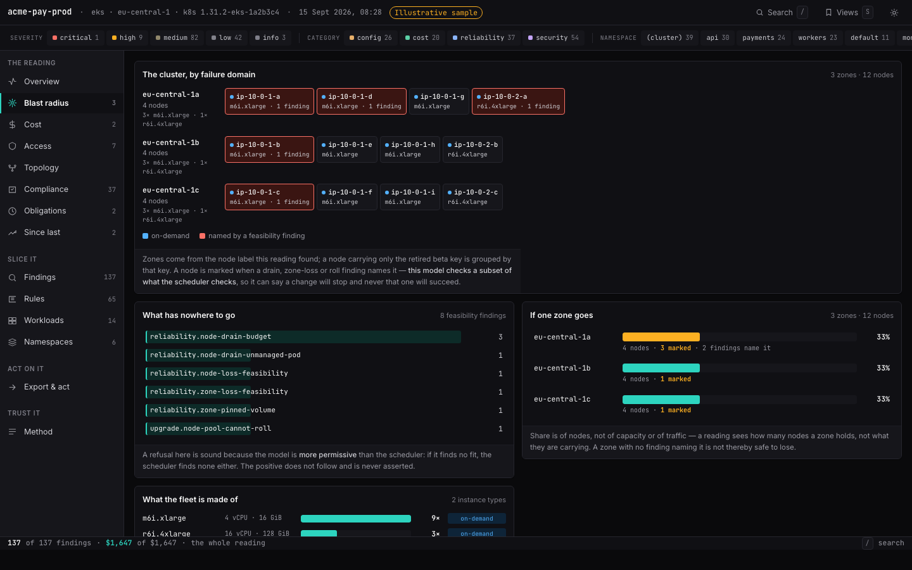
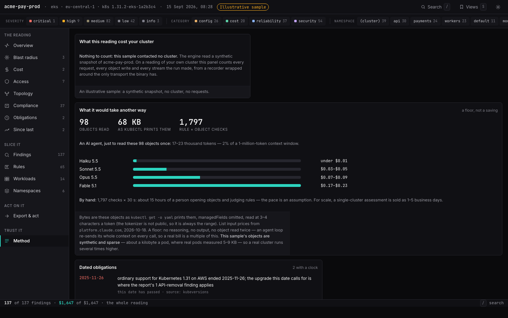
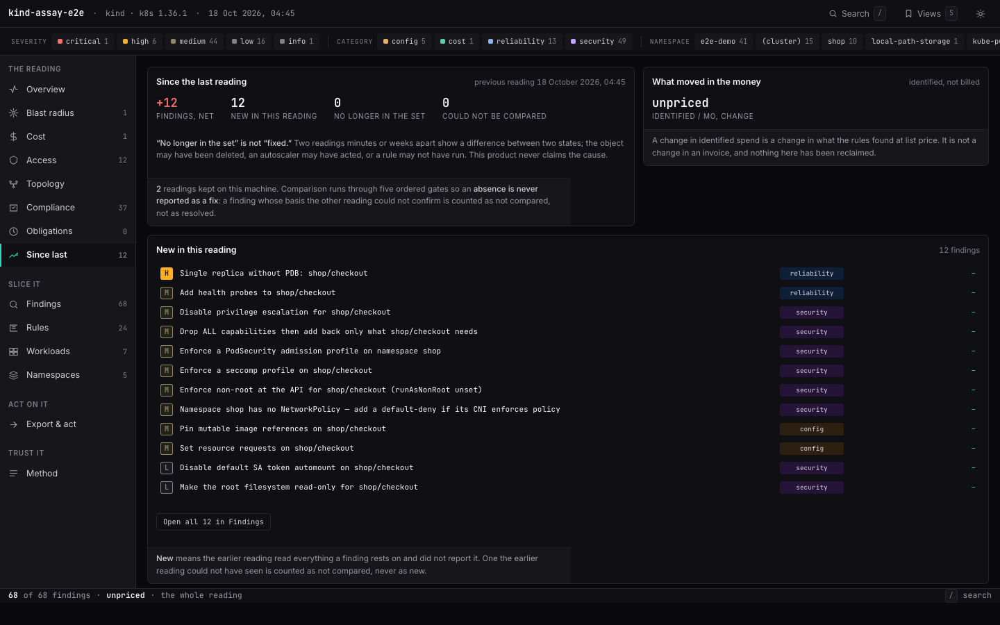

Free
For a first look at any cluster.
$0
no account, nothing to pay
- Preflight: drain, zone, upgrade
- The size of any reading: problems by severity and kind, and what they cost
- The desktop app's live run
Shoalcheck reads your cluster with get and list, from your laptop, in seconds — and tells you which node won't drain, what has nowhere to go if a zone fails, and what blocks the next upgrade. Every claim names the object it rests on.
$ shoalcheck preflight drain assay-e2e-worker ✗ assay-e2e-worker cannot be evacuated: 1 thing stops the drain 1. Drain of assay-e2e-worker is blocked by budget e2e-demo/drain-blocked-pdb Evacuating node assay-e2e-worker requires evicting 1 pod covered by PodDisruptionBudget e2e-demo/drain-blocked-pdb. · … · … reports status.disruptionsAllowed=0 with spec.maxUnavailable=0 … The eviction API would reject that eviction, so `kubectl drain assay-e2e-worker` would not complete … · … basis: 12 kinds read · 16 requests, 0 object writes · … $ echo $? 2
shoalcheck preflight zone eu-central-1a — exit 2.Illustrative sample: a fictional cluster run through the real engine. The verdict and its reasons are the reading's own.
Ask it yourself. Every answer below was computed by shoalcheck preflight for each zone and each node of the sample.
Each one reads only the kinds it needs and answers with an exit code a pipeline can act on: 0 nothing stops it, 2 something does, 1 the answer is partial and says what was refused.
$ shoalcheck preflight drain assay-e2e-worker2 ✗ assay-e2e-worker2 cannot be evacuated: 1 thing stops the drain 1. Drain of assay-e2e-worker2 is blocked by budget e2e-demo/drain-blocked-pdb Evacuating node assay-e2e-worker2 requires evicting 1 pod covered by PodDisruptionBudget e2e-demo/drain-blocked-pdb. · … · PodDisruptionBudget e2e-demo/drain-blocked-pdb reports status.disruptionsAllowed=0 with spec.maxUnavailable=0, … The eviction API would reject that eviction, so `kubectl drain assay-e2e-worker2` would not complete; finishing it requires force-deletion, which bypasses the budget entirely. · … · A PodDisruptionBudget constrains only the voluntary eviction path. It gives no protection against this node failing, … · … basis: 12 kinds read · 16 requests, 0 object writes · checks: k8s.reliability.node-drain-budget, … · 55ms exit 2
$ shoalcheck preflight zone eu-central-1a --context kind-assay-mesh ✓ zone eu-central-1a: every pod this model can place has somewhere else to go basis: 11 kinds read · 15 requests, 0 object writes · checks: k8s.reliability.zone-loss-feasibility, k8s.reliability.zone-pinned-volume · 53ms this model checks a subset of what the scheduler checks: it can say a change will stop, and it cannot promise one will succeed. exit 0
$ shoalcheck preflight upgrade 1.37 ✓ upgrading to 1.37: nothing this model checks stops it basis: 8 kinds read · 12 requests, 0 object writes · checks: k8s.upgrade.node-pool-cannot-roll, k8s.upgrade.crd-conversion-webhook-unbacked, api-removals@2026-08-30 · 26ms this model checks a subset of what the scheduler checks: it can say a change will stop, and it cannot promise one will succeed. exit 0

The dates every reading uses to place a cluster's version, and the rate it prices extended support at. Pick yours.
shoalcheck audit reads reliability, security, cost and topology and writes one self-contained file: every finding with the object it rests on, every dollar with its rate, and what could not be read named as such — never counted as clean. Filter it, slice it, open any finding, hand it off.



Two real readings of our own kind test cluster, two seconds apart, around one deliberate bad deploy: shop/checkout on nginx:latest, one replica, no probes. The second names the twelve findings the first did not have, and each one opens to what it rests on.
A finding that goes missing is counted as missing, never as dealt with: the object may have been deleted, or a rule may not have run. History stays on your machine.
Open the comparisonThe sample company's three clusters — production, staging and disaster recovery — each read by the engine and put together the way shoalcheck fleet does. Each name opens that cluster's full reading. Staging declares Pod Security levels, a NetworkPolicy and a quota that production does not yet; the recovery cluster runs without monitoring and serves Velero's API.
What the clusters declare differently is listed side by side, and no value is marked as the right one. A context that could not be read is named, never counted as a cluster with no problems. Like the sample reading, it is labelled as a sample on every screen.
Open the sample fleet
Pick a cluster, ask a question, read the answer. Home with the three jobs, Preflight over your real nodes and zones, every reading kept and comparable, ⌘K to anything — and it tells you when a new version is out.
The demo is the real window replaying a session recorded against our kind test cluster. Nothing in it talks to a cluster.
Every figure here is measured or a floor, with its basis underneath — never a saving we ask you to take on trust.
1 M tokens — the largest window of the models priced here
kubectl get -o yaml prints them, at 3–4 characters a token. Measured on our two test clusters on 17 October; the 1,500-pod line is the calculator below, set to 1,500 pods. Scale: 2.5 M tokens across. Past the line, an agent can only read a sample — and an audit of a sample is not an audit.A floor for the agent: no reasoning, no output, nothing read twice — an agent loop re-sends its whole context on every call. The model, from our kind test cluster: about 160 cluster-wide objects plus four per pod; a pod 5.4 KB as kubectl prints it, 9.3 KB with a mesh sidecar, everything else 0.67 KB; 7.3 rule-by-object checks per object. List input prices from platform.claude.com, fetched 2026-10-18. Hours by hand are your seconds and your rate, not a measurement; an assessment is sold in days because it samples, and these are every check a reading makes.
The audit path issues get and list. A recorder wraps the only transport the binary has and counts every request it makes; the figure you see is that count. Secret and ConfigMap values, environment variables, logs and node shells are never read at all.
What it reads, line by linePriced by the clusters you read in any 30 days — never by node, never by seat. A licence is checked offline.
For a first look at any cluster.
For an engineer with a few clusters.
For a platform team and its pipeline.
For an organisation running many clusters.
A licence is a signed key the binary checks offline — no phoning home. Reading the same cluster again costs nothing, and preflight is never counted. Prices in US dollars, before any sales tax or VAT.
The command line and the desktop app read the same way and accept the same licence key. Nothing goes into your cluster; the binary needs only the kubeconfig you already use.
Not notarized by Apple yet, so macOS stops it the first time: open System Settings → Privacy & Security and choose Open Anyway — or remove the quarantine flag with xattr -dr com.apple.quarantine /Applications/Shoalcheck.app.
Not code-signed yet: SmartScreen asks once — More info, then Run anyway. The app opens in your browser.
Static binaries, no system libraries required. The app opens in your browser.
brew install shoalcheck/tap/shoalcheck
macOS and Linux, from the first stable release; release candidates are downloads only.
kubectl shoalcheck preflight drain node-1
Put kubectl-shoalcheck from the release on your PATH; kubectl finds it by its name.
shoalcheck upgrade
The app tells you when a new version is out and installs it after checking its signature; Homebrew and krew copies upgrade through them.
Every release publishes SHA-256 sums, signed with cosign.
No. It is a binary on your machine that talks to the Kubernetes API with your kubeconfig, issuing get and list. There is no agent, operator, CRD or webhook, and nothing to uninstall.
Read access to the kinds it lists — shoalcheck audit --show-permissions prints them before it connects. With less, it still runs, and says which kinds it could not read and why. A refused read is never reported as a clean one.
Nothing about your clusters. The binary talks to your API server and, when one is reachable, to Prometheus. The only other request is the update check — shoalcheck upgrade, or the desktop app once a day if you leave that switch on — which asks github.com for the newest release and carries nothing about a cluster.
Any conformant Kubernetes cluster it can reach. Costs are priced from bundled list prices for EKS, AKS and GKE; on any other cluster a figure says “unpriced” rather than inventing a rate.
A distinct cluster, by its kube-system UID, read with a licence in any 30 days — counted on your machine. Reading the same cluster again costs nothing, and preflight is never counted.
Offline. A key is a signed document naming your plan, its expiry and its cluster cap, and the binary verifies the signature without phoning home. Paste it into the app under Plan & licence, or run shoalcheck licence install.
Preflight in full, and the size of any reading: how many problems, how serious, of what kind, what they would cost, and the five most serious kinds. Which objects, the evidence and the fix for each are what a licence adds. Nothing is saved, written or exported.
The first releases are not yet notarized by Apple or code-signed for Windows. Each release publishes the archives' SHA-256 sums, signed with cosign, so you can check what you downloaded with cosign verify-blob and the public key beside the releases.
Free preflight, no account, nothing installed. Two minutes from download to your first answer.
"Just the output" hides our sentences and keeps what the product printed — the terminals, the scene, the calculators, the video and the readings — with every caption that says what each rests on.